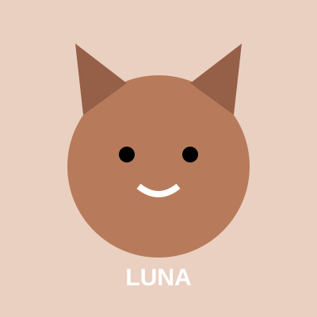
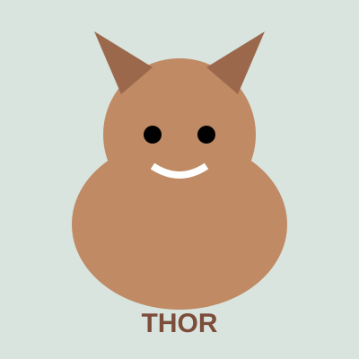
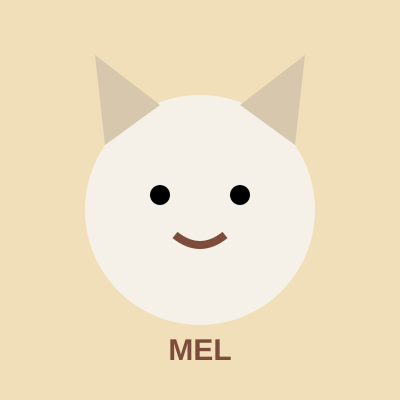
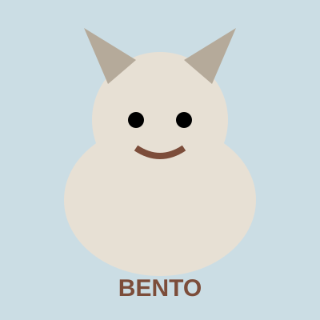

Adoção responsável
Encontre um amigo para a vida.
Conheça alguns dos animais que estão esperando por uma família.

Disponível
Thor
Cachorro • 2 anos
Brincalhão, dócil e cheio de energia para compartilhar.
Tenho interesse

Antes de adotar
Falar com a equipe
Adotar é assumir um compromisso.
É importante considerar espaço, tempo, alimentação, cuidados veterinários e a responsabilidade de oferecer uma vida segura e amorosa.